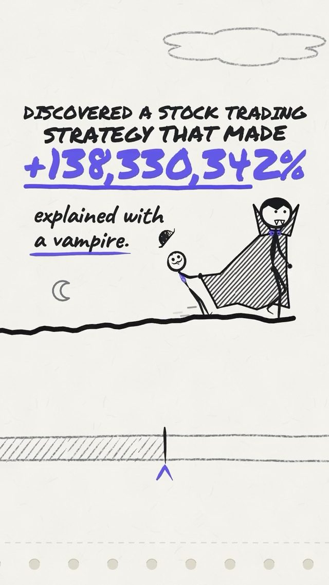
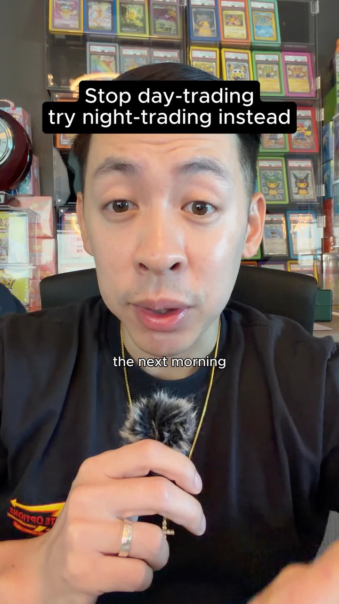
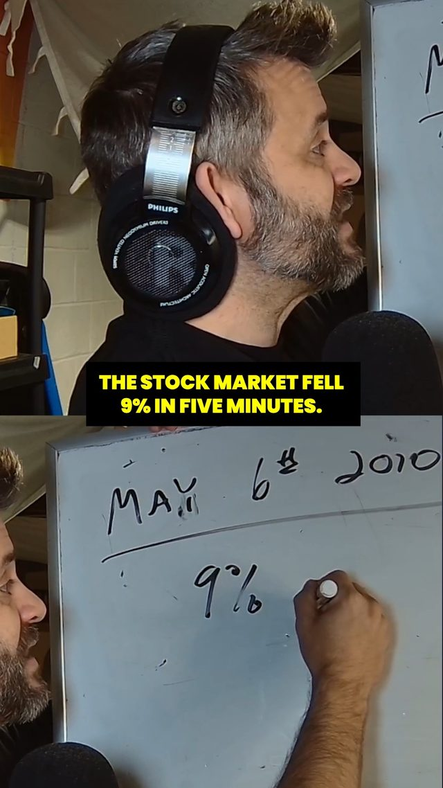
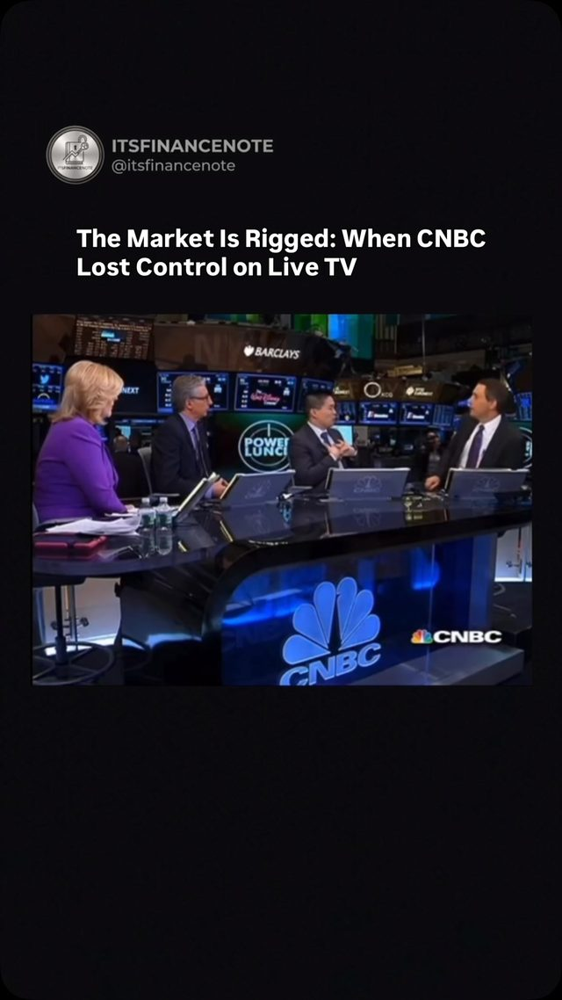
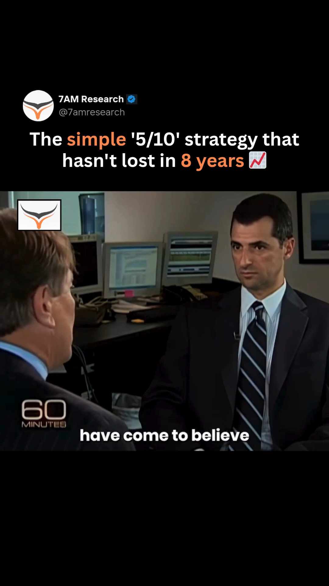
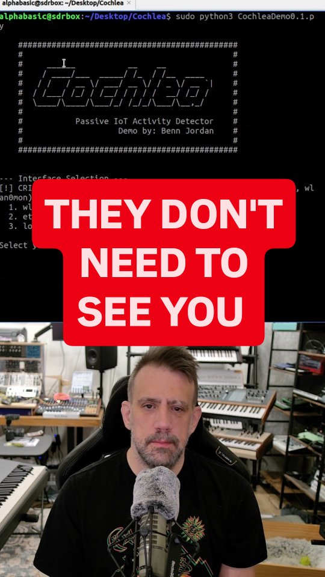

Who's Across the Table — forensics for the system trading against you
Try It — Action Sketch
Split two years of SPY and QQQ returns into close-to-open and open-to-close legs, then subtract realistic open-gap spreads to see whether the overnight leg survives costs. Export your own broker fills and compare each to the NBBO at the time, so you measure the price improvement or slippage you actually got. For one paid or free-to-play app you use, run REA MCP on your own install and list every model or rule that adapts to you (authorized analysis only). falsifier: if the overnight leg disappears after costs and your fills match or beat the NBBO, the counterparty isn't taking much from you at your size — move your effort to the strategy-loop dive.
Connected Posts (9)







Prompt system — run this yourself
Pasteable into Claude Code, Claude, or any agent. One-shot for the whole result, step prompts when you want to steer. Every step carries its own audit; the gap audit makes the agent find and fill what it missed.
Mission. Running this system measures the edge already being taken from you before you look for your own. It replicates the overnight-versus-intraday return split on SPY and QQQ with realistic costs and a control, measures your own broker fills against the national best bid and offer (NBBO), and, for one app you use, documents on your own install every model or rule that adapts to you, under authorized analysis only. It is for an individual trader and app user. Done means three reports with reproducible code, a paper-only verdict on the overnight leg, a slippage number in basis points, and an app findings list where every claim cites decompiled evidence.
1 · Deeper, not bigger
- What a top professional would do (that you didn't ask for): A market-microstructure researcher would replicate the overnight anomaly from primary data with dividends and splits assigned to the correct leg, use opening and closing auction prices rather than the first and last trade, and charge realistic auction costs per side before calling anything an edge. They would compare against the published literature (Cliff, Cooper and Gulen 2008; Lou, Polk and Skouras 2019; Knuteson 2020) and test out of sample by decade. For fills they would read the broker's SEC Rule 605 and 606 reports and match each fill to a consolidated quote at millisecond resolution. For the app they would work only on their own device and their own install, record legal basis, and treat findings as hypotheses until a second method confirms them.
- Rawest material to start from: 1) Knuteson, 'Strikingly Suspicious Overnight and Intraday Returns' (arXiv, 2020) and its data appendix. 2) Lou, Polk and Skouras, 'A Tug of War: Overnight Versus Intraday Expected Returns' (Journal of Financial Economics, 2019). 3) Daily open, close and dividend data for SPY and QQQ from at least two vendors (for example Stooq and yfinance) to cross-check. 4) Your broker's fill export with timestamps and the broker's published Rule 605 and 606 reports. 5) Consolidated quote data at fill timestamps (a paid tick source such as Databento or Polygon). 6) The REA MCP repository and Ghidra documentation. 7) The CFTC-SEC joint report on the May 6, 2010 market events. 8) Cong, Li, Tang and Yang, 'Crypto Wash Trading', for detection methods.
- Methods and tools: Python with pandas and numpy; overnight return = open_t / close_(t-1) - 1 with dividends credited to the overnight leg; intraday return = close_t / open_t - 1; compounding both legs must reproduce buy-and-hold within rounding; cost model of 1, 2 and 5 basis points per side with market-on-open and market-on-close orders; Newey-West standard errors; out-of-sample split by period; a placebo leg (random 50/50 assignment of days) as control; for fills, an as-of merge of each fill to the NBBO at or before its timestamp, signed slippage in bps; for the app, Ghidra with REA MCP on your own device's install, plus jadx for Java layers and Il2CppDumper if it is a Unity IL2CPP build; xgboost to load any embedded model file and list its features; Benford and trade-size clustering tests for wash-trading detection on public exchange data.
- What proves it right: Reproduction of the published overnight and intraday decomposition for SPY within a stated tolerance over the paper's period. Agreement between two independent price vendors. The broker's own Rule 605 price-improvement statistics as an outside check on your measured slippage. For the app, a second method (network traffic of your own device, or a controlled two-account experiment you own) confirming any adaptive rule claimed from code.
Rewritten prompt — ask for exactly that:
Before I look for trading edge, I want to measure the edge being taken from me. Act as a market-microstructure researcher. Paper only; no real orders. (1) Replicate the overnight versus intraday split for SPY and QQQ over 2 years and over the full history, using auction-relevant open and close prices, dividends credited to the overnight leg, and costs of 1, 2 and 5 basis points per side. Check that the legs compound to buy-and-hold. Use a placebo leg and an out-of-sample period as controls, and compare with Knuteson 2020 and Lou, Polk and Skouras 2019. (2) Match each fill in my broker export to the NBBO at its timestamp, report signed slippage in basis points by order type and time of day, and compare with my broker's Rule 605 report. (3) On my own phone, for one app I use, run Ghidra with REA MCP to list every model or rule that adapts to me, citing decompiled evidence per finding; analysis of my own install only, no redistribution, no bypass of protections, and stop if the terms forbid it. Report each claim from the source posts as replicated, not replicated or untested.
2 · One-shot prompt
ROLE AND STANCE You are a forensic market-microstructure researcher and a defensive software analyst. Your job is to measure what counterparties take from one individual, not to find a strategy to trade. Paper only: no orders, no real money, no position recommendations. CONTEXT - quantpapers on Knuteson: Micron since 1990 shows +138 million percent overnight and -99.9% intraday on paper, a sawtooth in 21 indices; the paper alleges firms push prices at the open. A claim, not a proof. - eliteoptionstrader2: same anomaly, mechanism 'retail trades the open, institutions trade into the close', costs ignored. - ayoships on Block Blast: a local XGBoost model on phone model, country, past ad revenue and vibration setting predicts ad value and tunes difficulty; rules named 'Boost Then Kill' and 'High Value Ad Harvest'. Evidence promised, not shown. - backsla.sh: REA MCP lets an agent drive Ghidra and cite evidence per call; authorized use only. - thestockguytwitch: Navinder Sarao spoofed E-mini S&P futures in the 2010 Flash Crash. - cbcgem: an interviewee claims 90-95% of crypto volume is wash trading, unaudited. - itsfinancenote: Katsuyama versus BATS on direct feeds versus the SIP; IEX's speed bump came out of that debate. - 7am.research: Manoj Narang's breadth-based weekly reversal across about 4,500 stocks. - bennjordan's Cochlea: encrypted traffic still leaks activity through timing and volume. HARD CONSTRAINTS - No real trades. If the overnight leg survives costs, the next step is a 6-month paper log against a buy-and-hold control, with a planned position cap of 5% of capital and a 10% drawdown stop written down before any real money; nothing real until that paper log beats the control after costs. - App analysis only on your own device and your own legally obtained install; check the terms of service and local law first, do not bypass DRM or anti-tamper, do not publish code, and do not touch servers or other users' data. - Cochlea-style traffic analysis only on your own network and devices. - Spoofing and wash trading are studied to detect them, never to perform them. DELIVERABLES, IN ORDER 1. claims.md: each creator claim, with replicated / not replicated / untested. 2. overnight/: code and report for SPY and QQQ, 2 years and full history, gross and at 1, 2 and 5 bps per side, with a placebo leg, an out-of-sample split, Newey-West t-stats and a leg-compounding check. 3. fills/: as-of join of your fills to NBBO, signed slippage in bps by order type, size and time of day, compared with the broker's Rule 605 statistics. 4. app_audit/: legal-basis note, tool setup, and a findings table (rule or model, inputs, effect, evidence file and address, confidence), plus a second-method confirmation for each high-impact finding. 5. detectors.md: how you would detect spoofing-style order-book pressure and wash trading in public data you can access, with one worked example on a crypto pair using trade-size clustering. 6. verdict.md: how much the counterparty takes at your size, and whether to move effort to the strategy-loop dive. GAP ANALYSIS (BUILT IN) Maintain gaps.md: data vendor disagreements; dividend handling; whether opens are auction prints or first trades; fill timestamp precision versus quote precision; app findings that rest on one method only; anything the terms forbade. Fill what you can; name what is missing. SELF-QUESTIONS - Do my two legs multiply back to buy-and-hold? - Would the overnight leg survive at 2 bps per side, and at 5? - Is the anomaly stable across decades or concentrated in one era? - Is my slippage measured against the quote that existed when I sent the order or when it filled? - Is any app finding just a naming guess from a decompiled symbol? STOP CONDITIONS Stop if the app's terms or local law prohibit the analysis, if data vendors disagree by more than 0.5% on more than 1% of days, or if fills lack timestamps. Otherwise stop when all six deliverables exist. RETURN FORMAT Table of deliverable, path, status; the overnight table at each cost level; median slippage in bps; top app findings with confidence; the falsifier verdict; top five gaps.
3 · Step-by-step prompts
Step 1 — Ground truth: papers, data, legal basis
Goal: Collect primary sources and confirm what you are allowed to analyze.
Paper research only. 1. Download Knuteson 'Strikingly Suspicious Overnight and Intraday Returns' (arXiv 2020) and Lou, Polk and Skouras 2019. Extract their exact return definitions, periods, data sources and headline numbers into papers.md. 2. Pull SPY and QQQ daily open, close, adjusted close and dividends from two vendors. Report days where opens differ by more than 0.1%. Record whether each vendor's open is the official opening auction price. 3. Export your broker fills. Record timestamp precision, order types present and whether routing venue is included. Download your broker's latest Rule 605 and 606 reports. 4. Pick one app on your own phone. Read its terms of service for reverse-engineering clauses and note the jurisdiction. Write legal_basis.md stating what you may do. If the terms forbid decompilation and no legal exception clearly applies, pick a different app or skip the app arm. 5. Write claims.md from the creators' statements: '+138 million percent overnight, -99.9% intraday' (Micron), '21 indices', 'XGBoost on phone model, country, ad revenue, vibration', '90-95% of crypto volume is fake', 'never had a losing month' (Narang).
Expect: papers.md, vendor_check.csv, fills_profile.md, rule605_notes.md, legal_basis.md, claims.md.
Audit before moving on: Recompute one paper headline you can check with your data, such as SPY's overnight share for a sub-period. If legal_basis.md does not name a clear permission, the app arm stays off.
Step 2 — Overnight decomposition with costs and controls
Goal: Find out whether the overnight leg survives realistic costs.
Build overnight/decompose.py. For each day: overnight = (open_t + dividend_t if ex-date) / close_(t-1) - 1; intraday = close_t / open_t - 1. Assert that the product of (1+overnight)(1+intraday) over the period matches buy-and-hold total return within 0.1%. Compute for SPY and QQQ over the last 2 years and full history: annualized return, volatility, max drawdown and Sharpe for overnight, intraday and buy-and-hold. Apply costs of 1, 2 and 5 bps per side (two sides per day for the overnight strategy). Add a placebo control: randomly assign each day's full return to two groups 1,000 times and report where the real overnight leg sits in that distribution. Split full history into decades and report each. Use Newey-West t-stats for mean daily returns. Plot cumulative curves on a log scale. Do not use leverage. No real orders.
Expect: overnight/report.md with tables per ticker, cost level and decade, placebo percentile, and log-scale charts.
Audit before moving on: The compounding assertion must pass. If the overnight leg's edge disappears at 2 bps, say so in bold in the report. Check one random day's legs by hand from raw data.
Step 3 — Your fills against the NBBO
Goal: Measure what you actually pay on execution.
Load your fill export and consolidated quotes for each fill's symbol and day from your tick source. As-of join each fill to the last NBBO at or before its timestamp. If your broker gives order-sent times, also join to the quote at send time. Signed slippage in bps: for buys (fill - midpoint) / midpoint, for sells (midpoint - fill) / midpoint; also report price improvement versus the far side (ask for buys, bid for sells). Break down by order type (market, limit, marketable limit), size bucket, time of day (first 15 minutes, midday, last 15 minutes) and venue if present. Compare your average price improvement with the broker's Rule 605 statistics for similar order sizes. Estimate annual cost: average slippage times your annual traded notional.
Expect: fills/report.md with tables and the annual cost estimate; fills/joined.parquet.
Audit before moving on: If fill timestamps are only to the second, report the slippage range across all quotes within that second, not a single number. Any fill outside the day's high-low range indicates a data join error; fix before continuing.
Step 4 — Defensive audit of one app on your own device
Goal: List rules and models that adapt to you, with evidence.
Only proceed if legal_basis.md permits. Work on your own device and your own install. Do not bypass DRM or anti-tamper, do not contact the app's servers beyond normal use, do not publish code. Set up Ghidra and REA MCP on Ubuntu per the REA repository. Pull the APK from your device with adb. If it is a Unity IL2CPP build, recover metadata with Il2CppDumper; inspect Java layers with jadx. Ask the agent, through REA, to find: embedded model files (for example XGBoost JSON or UBJ under assets), feature names fed to them, remote-config keys controlling difficulty or ad timing, and any rule names similar to 'Boost Then Kill' claimed in ayoships's post. Require every finding to cite file, function and address. If a model file exists, load it with xgboost and list features and tree count. Do not run it on anyone else's data.
Expect: app_audit/findings.csv (rule or model, inputs, effect, evidence, confidence) and setup.md.
Audit before moving on: Drop any finding without a cited address. Mark findings inferred only from symbol names as low confidence. If REA's output disagrees with your manual reading in Ghidra, trust the manual reading and note the disagreement.
Step 5 — Confirm app findings and build detectors
Goal: Back each high-impact claim with a second method and turn market tricks into detectors.
For each high-confidence app finding, design a second-method check on your own device: for example, log your own network traffic with mitmproxy on your own phone to see if ad-value or difficulty config is fetched, or compare two accounts you own on one device with different settings for vibration or region. Record results. Detectors: using public data you can access, write detectors.md covering spoofing-style pressure (large resting orders cancelled before execution within N ms, measured from an exchange's public order-book feed) and wash trading (trade-size clustering at round numbers and Benford deviations, following Cong et al.). Run the wash-trading test on one crypto pair from a public trade API and report the result against the interviewee's '90-95% fake' claim. Note Cochlea's lesson: timing and volume reveal intent even when content is hidden, so check what your own devices leak on your own network.
Expect: app_audit/confirmations.md, detectors.md with one worked crypto example and code.
Audit before moving on: A finding confirmed by only one method stays 'unconfirmed'. The crypto test must state its sample and limits; it cannot prove fraud on its own.
Step 6 — Validate against oracles and write the gap report
Goal: Answer the falsifier and record what remains unknown.
1. Compare your SPY overnight and intraday results with the published papers over overlapping periods; report the difference and likely causes. 2. Cross-check results using the second vendor's data. 3. Compare your measured fill slippage with your broker's Rule 605 statistics. 4. Apply the falsifier: if the overnight leg disappears after costs and your fills match or beat the NBBO, the counterparty is not taking much at your size; recommend moving effort to the strategy-loop dive. 5. If the overnight leg survives at 2 bps, write a paper-trading plan only: a 6-month log with a buy-and-hold control, a planned 5% position cap and 10% drawdown stop, and the rule 'no real money until the paper log beats the control after costs'. 6. Write gaps.md: every claim from claims.md with replicated / not replicated / untested and evidence; data and timestamp limits; app findings resting on one method; anything skipped for legal reasons. Fix what you can now.
Expect: verdict.md, gaps.md, and if applicable paper_plan.md.
Audit before moving on: Re-run decompose.py from a clean environment and confirm identical tables. Confirm no real orders were placed and no app code was published.
4 · Gap analysis and audit
You are auditing a counterparty-forensics project you did not build. Read claims.md, overnight/, fills/, app_audit/, detectors.md, verdict.md and legal_basis.md. 1. List every claim: return figures per leg and cost level, slippage numbers, app rules and models, wash-trading results. 2. Mark each verified, unverified or false, citing a table, a query, a decompiled address or a second-vendor check. 3. Re-check: the legs compound to buy-and-hold; dividends are in the overnight leg; costs are applied on both sides each day; the placebo control exists; slippage uses quotes at or before the timestamp; every app finding has an address and a second-method status; legal_basis.md permits what was done; no real orders were placed. 4. List missing pieces: intraday auction data, taxes on daily round trips, borrow or margin constraints, app findings not confirmed. 5. Rank gaps by whether they change the falsifier verdict. 6. Fix the top three now. 7. Report what you could not fix and why.
Questions the agent must ask itself before it says done:
- Do my overnight and intraday legs multiply back to buy-and-hold total return?
- Did I credit dividends to the overnight leg, or did ex-dividend drops bias it down?
- Are my opens official auction prints or first trades?
- At 2 bps per side, does the overnight leg still beat buy-and-hold on a risk-adjusted basis?
- Is the anomaly concentrated in one decade?
- Is my slippage measured at order-send time or fill time, and does it matter at my timestamp precision?
- How does my price improvement compare with my broker's Rule 605 numbers?
- Does each app finding rest on code evidence, or on a symbol name that sounds damning?
- Did legal_basis.md actually permit the decompilation I did?
- Am I treating the '90-95% fake crypto volume' figure as data when it is an interview claim?
- What does my own home network leak about my activity, Cochlea-style?
5 · What proves it right
- Knuteson 2020 and Lou, Polk and Skouras 2019: SPY overnight and intraday figures reproduced over overlapping periods within a stated tolerance.
- A second price vendor: identical conclusions at each cost level.
- The broker's SEC Rule 605 report: price-improvement statistics consistent with measured slippage for similar order sizes.
- A second method on your own device (mitmproxy traffic logs or a two-account test you own) confirming each high-impact app finding.
- The CFTC-SEC joint report on May 6, 2010 as the reference for how spoofed depth propagated, used to check the detector design.
6 · Failure modes
- Dividend leak. Tell: overnight leg underperforms the papers by roughly the dividend yield. Fix: credit dividends on ex-dates to the overnight leg.
- Costless anomaly. Tell: spectacular curves with no cost line. Fix: report at 1, 2 and 5 bps per side and lead with the 2 bps result.
- Timestamp mismatch. Tell: fills appear outside the NBBO often. Fix: join on quotes at or before send time and report a range at coarse precision.
- Symbol-name findings. Tell: app claims rest on function names like 'kill'. Fix: require code paths and a second method.
- Legal overreach. Tell: bypassing anti-tamper or publishing decompiled code. Fix: stop, delete, restate the scope in legal_basis.md.
- Paper edge becomes real trades. Tell: orders placed before the paper log exists. Fix: enforce the 6-month paper gate with a control.
- Anecdote as data. Tell: '90-95% fake' repeated as fact. Fix: label as an interview claim and report your own measured result.
7 · Agent direction (unattended runs)
Run the overnight arm first; it needs only free daily data and gives the fastest falsifier signal. Cache raw vendor downloads under data/raw/ with retrieval dates, and quotes for fill days under data/quotes/. Spawn a sub-agent for the fills arm once data is in place, and keep the app arm in the main loop because it needs legal judgment. Stop and ask before any app analysis if legal_basis.md is unclear, before buying tick data, and whenever a step would place an order. Never place trades and never publish decompiled code. Treat REA's agent output as leads to verify in Ghidra by hand, not as findings. Return README.md with links to claims.md, overnight/report.md, fills/report.md, app_audit/, detectors.md, verdict.md and gaps.md, each with a one-line status and the falsifier verdict.
Prompt system updated 2026-10-22 · all prompt systems · JSON